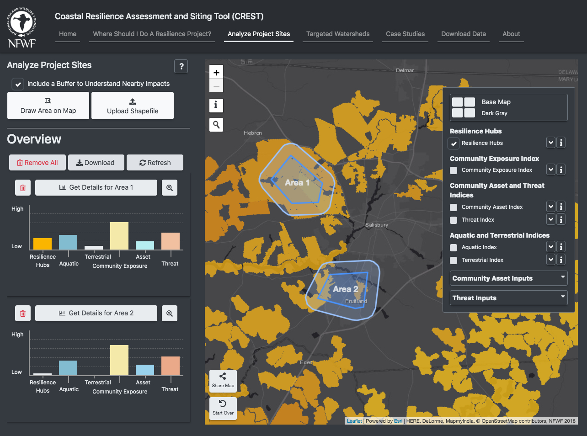
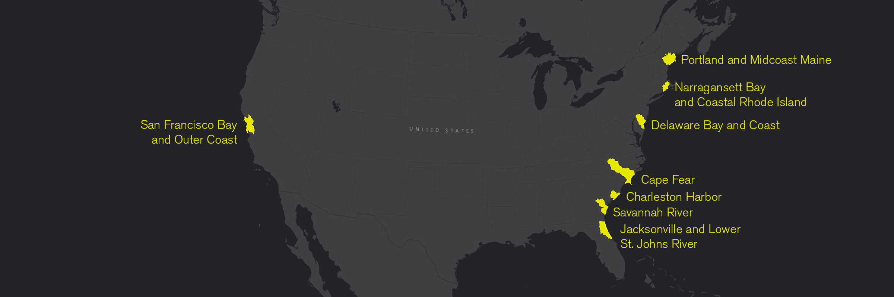
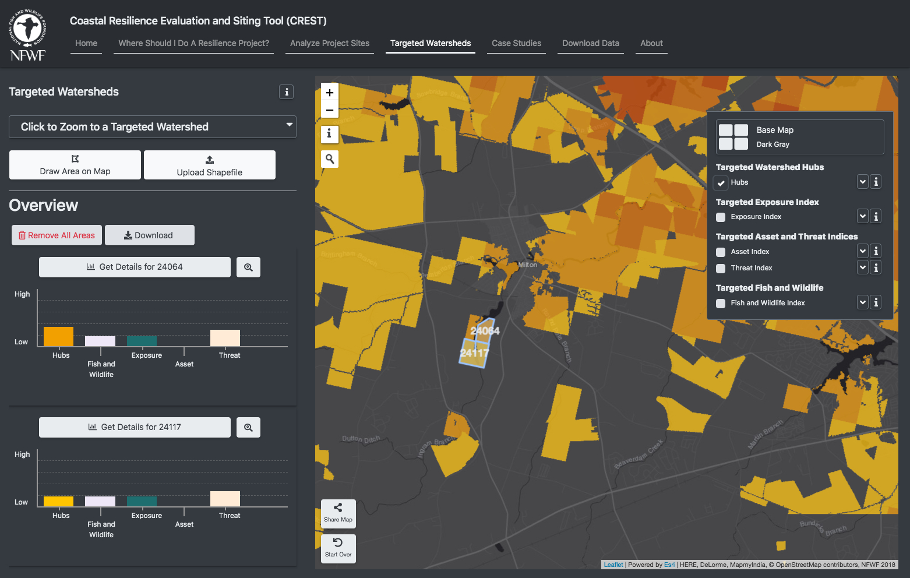

Coastal Resilience Evaluation and Siting Tool (CREST)
CREST can be used to make informed decisions about the siting of restoration and resilience projects. The tool
identifies Resilience Hubs, which are areas of open space where projects may have the greatest potential to benefit both human community
resilience and fish and wildlife. Resilience Hubs incorporate multiple indices, which can also be explored through CREST.
Regional Assessment


Identify all resilience hubs in your study area and rank them by their potential for a project to deliver both human community resilience and fish and wildlife benefits.
Where Should I Do A Resilience Project?Examine and compare your project site(s) in terms of its proximity to resilience hubs, as well as examine the community exposure and fish and wildlife indices in the surrounding area.
Analyze Project Sites


Learn how the Assessment was created.
Learn More About the AssessmentTargeted Watershed Assessments

CREST also includes eight in-depth assessments of targeted watersheds that incorporate
more specific fish and wildlife datasets as identified by local stakeholders. Within these watersheds, users can more precisely
target restoration opportunities to maximize benefits for communities, fish, and wildlife.

Identify all resilience hubs in your study area and rank them by their potential for a project to deliver both human community resilience and fish and wildlife benefits.
Targeted Watersheds